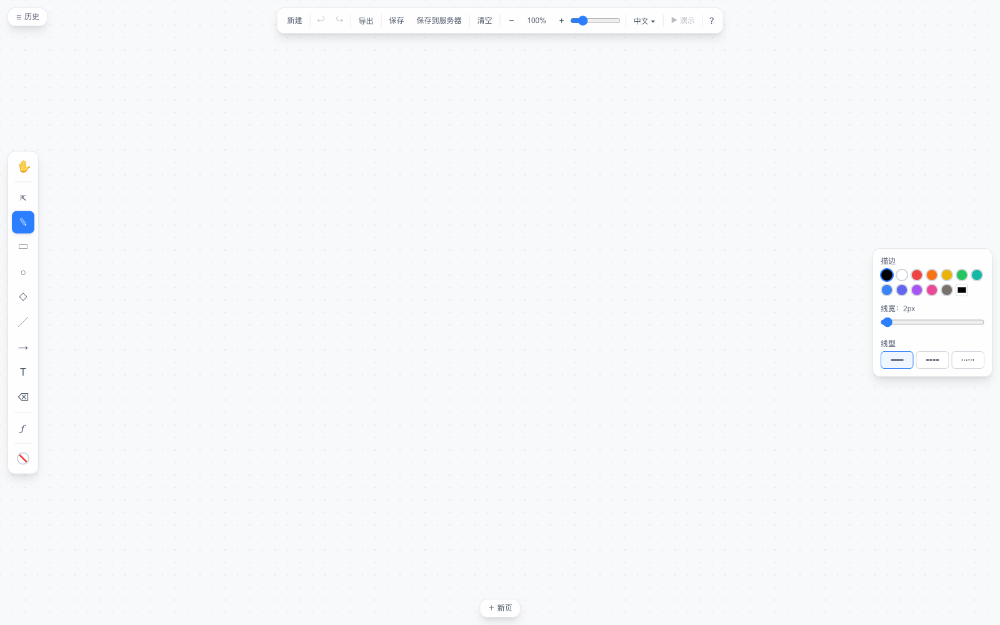
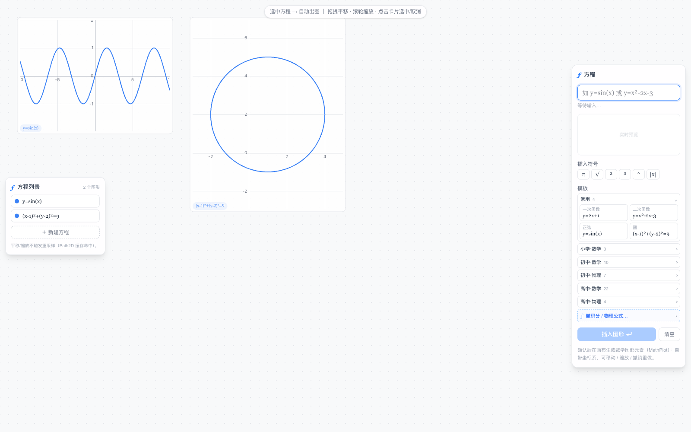

课堂上
讲到函数，当场画给学生看
写下 y = x² − 2x − 3，零点、顶点、开口一目了然——不用提前截图，不用切换软件，图形跟着讲解长出来。
§1方程出图 · 差异化能力
ƒ 方程工具即输即校验、实时预览。出图不是贴一张位图，而是一个自带局部坐标系的 MathPlot 元素——和其他白板元素一样选中、移动、缩放、撤销，每一步都可调。
§2白板的全副笔墨
常规白板该有的，一样不少——而且都在浏览器里，打开即用。
画笔、矩形、圆、直线、箭头、文本，笔触与线型随手调。
视口滚轮缩放、Space 拖拽平移；元素整体选中编辑，触摸屏同样顺手。
快照式历史，栈深 100 步——讲错一步，退回去重来。
一节课多块板，页面条快速切换；演示模式全屏放映。
矢量或位图一键导出，直接进讲义与课件。
浏览器本地持久化 + 服务器保存，关掉再开，板还在。
§3讲台上的三个时刻
课堂上
写下 y = x² − 2x − 3，零点、顶点、开口一目了然——不用提前截图，不用切换软件，图形跟着讲解长出来。
备课时
文字、图形、方程混排在同一块板上；定义域和线宽随手调，例题图比手画的更准、更好看。
演示中
演示模式逐页全屏；课后导出 SVG / PNG，讲义和作业册直接复用，曲线仍是矢量。
§4产品实拍
以下截图来自当前版本的实际界面。

